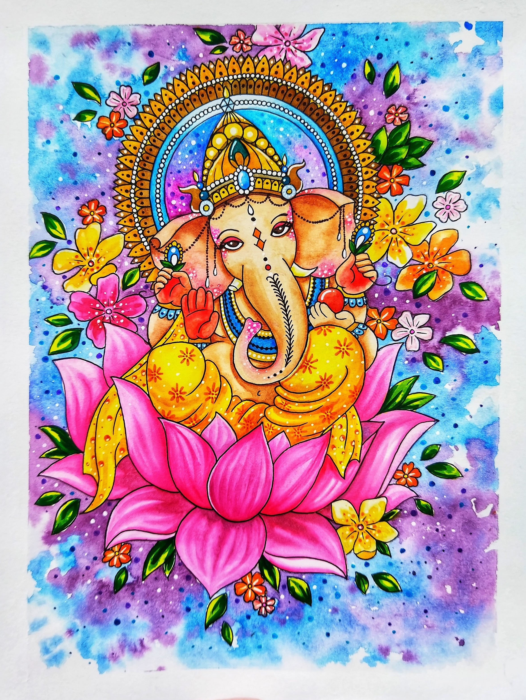
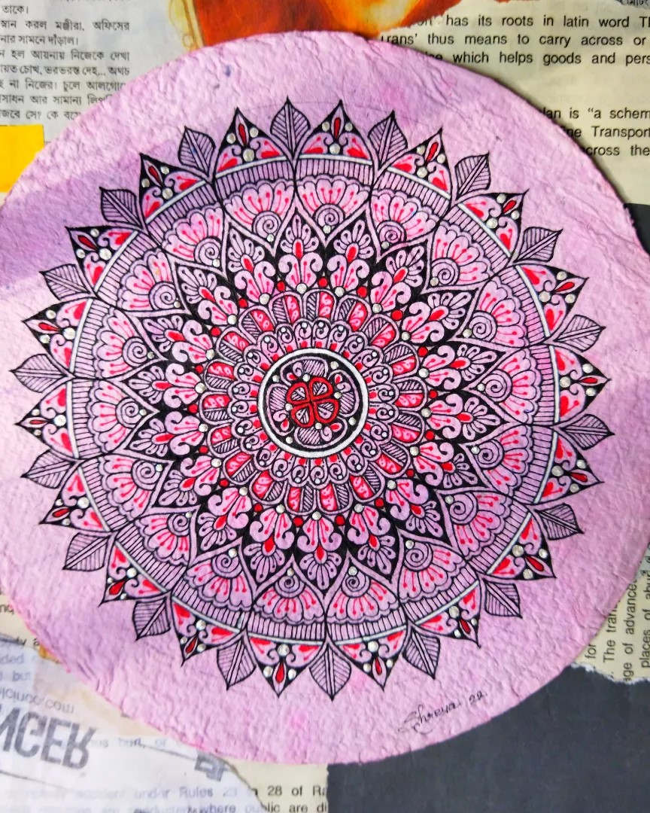
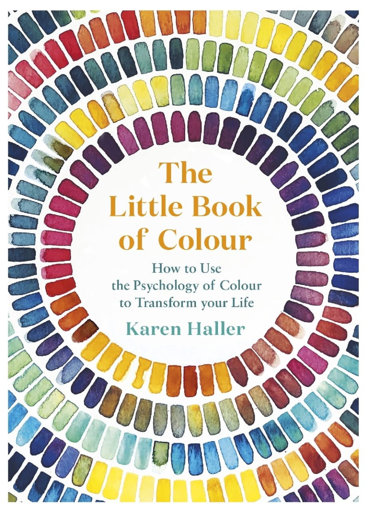
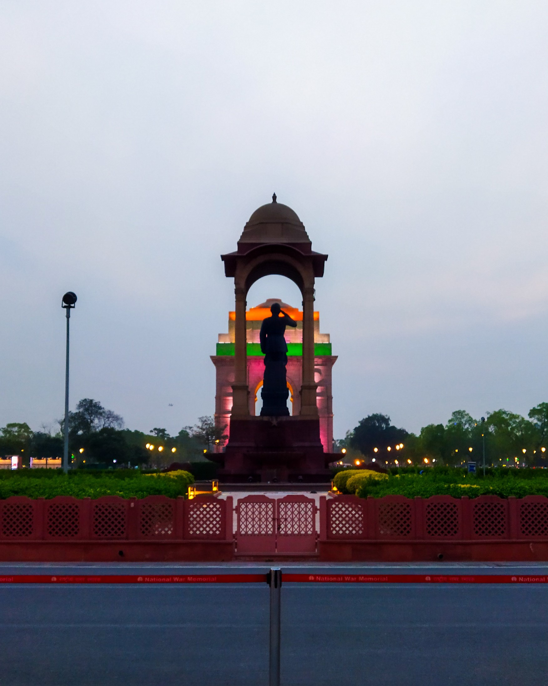
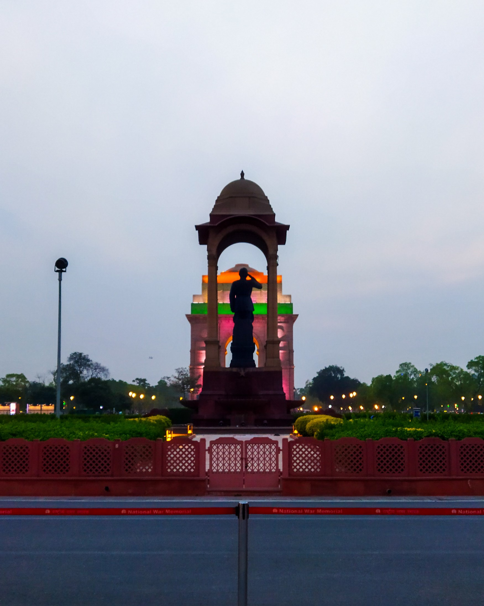

| Drawing and Painting: I have always loved painting.Though I am unable to do it much now, I keep practicing from time to time. I especially love drawing mandalas. |
 |
| Reading: My mother introduced me to reading story books and over the seeing my older cousins reading became a habit for me too. At present, I am reading a book on Colour Psychology called "The Little Book of Colour" by Karen Haller. |
 |
| Photography: I love clicking pictures specially if its sunsets or related to nature. |
   |